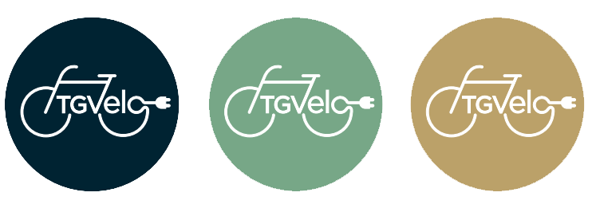
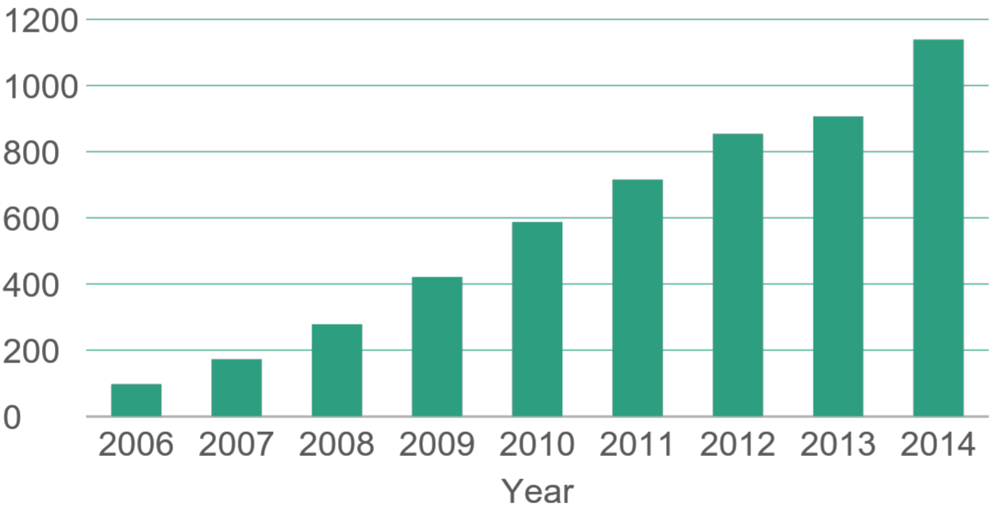
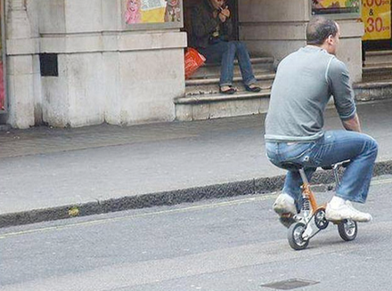
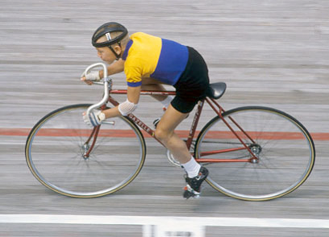
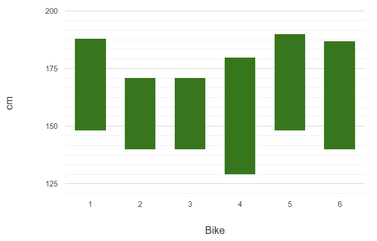

TGVelo Quality Label
KU Leuven Technology Campus Ghent.
D. Callebaut, J. De Maeyer, B. Rotthier, J. Cappelle, E. Motoasca
TGVelo Quality label

Jeroen De Maeyer WEBikeC 2016

Electric bicycle quality
- Introduction
- Combining existing knowledge
- New concepts
- Proven in practice
- Conclusion
Future of mobility
Energy efficient and clean
↓
Specialized vehicles for different applications
↓
Shared vehicles (mobility as a service)
European EPAC Sales (1000 units)

CONEBI European bicycle market (2015 edition)
2. Combining existing knowledge
TGVelo main principles
- Quantify quality
- Repeatable measuring of quality
- Integral approach to quality
Integral: usability!
Solution independent (1-4 wheels, up to 50 kg, ...)
Combining existing knowledge
- International policy organizations
- Pedelec test laboratories
- Light electric vehicle users
- Cycling industry
Organizing quality
- Useability: theft protection, controllability, luggage, ...
- Reliability: impact, redundancy, maintenance, ...
- Safety: visibility, brakes, tires, ...
New concepts
- Net available energy
- Design speed
- TGVelo sizing system
And many more...
New concepts
Net available energy (standard conditions defined)

New concepts
Design speed

New concepts
TGVelo sizing system


New concepts
Quality assessment system will become available in an online tool (tgvelo.org)
Most of it can be applied without expensive test equipment
Proven in practice
- Project bicycle fleet for test development
- Test bicycles for project partners
Applied to cargo bicycles in following three slides.
Body length range fitting on the bike

Conclusion
Help people and organizations to measure the quality of electric bicycles.
TGVelo main principles
- Quantify quality
- Repeatable measuring of quality
- Integral approach to quality